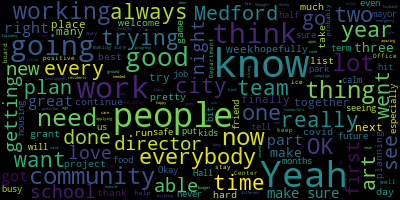

[Carter]: our students in the Medford Public Schools. Welcome to the show, Mare. Thank you, thank you for having me, Terry. You are welcome. So as we're seeing so much hostility and pain in the world right now, I'm currently writing from a place of some anxiety and deep reflection. So as is my custom in hosting these evenings, I like to share a piece of verse that is hopeful. Thank you. And it's called Maybe. Maybe if we could all cry together, we could make it all right. We could wash each other in familiar tears, bathing away the dirt of a filthy world with something like a warm spring rain. Maybe if we could all grieve as one over the confusion and mayhem and death of a society gone more than a bit mad, we could get past the anger. We could get out the anxiety. We could get around fear. We could get to real conversation. We could get on with forgiveness. Maybe if we could put down our weapons, we could recover the peaceful kingdom. We could rekindle lost relationships. We could embrace human diversity. We could rediscover beloved community. We could be equal sons, daughters, and heirs to a loving and liberating God. Maybe if we could pick up our crosses and carry them toward the hills of salvation together, we could see each other's footprints in the sand and snow and unpaved byways. We would know our neighbors. We would see the road unfold before us. We would feel the same wind in our sails. We would value the journey beyond the destination. Maybe if we could prize people over possessions. Everyone could have enough to thrive. Everyone could flourish, not just survive. Everyone could learn to really give. Everyone could value the life we live. No one would ever leave his brother behind. Everyone could lift as we all try to climb. Maybe if we could all laugh together, we could hear the universal sound of joy. We could revel in the gurgle of all the babies. We could immerse ourselves in the sweetness of each sparkling smile, the heartiness of each chortle, chuckle, guffaw, and belly laugh. We would let our frozen guard down and warm to the thawing of a kindred humanity. Maybe, just maybe. OK. Thank you. Thank you. So that's hopefully a good place to start. Let's really welcome Mayor Brianna and have a friendly chat. So thank you. Very good. Very good. So you've been kind of busy lately. You're doing the business of the city. What are you doing to, as Whitney Gilbert used to say on her show, relax, relate, and release?
[Lungo-Koehn]: Very busy lately.
[Carter]: Absolutely.
[Lungo-Koehn]: Yes, we're running the city, the campaign on top of that, and then I have three very, very happy and healthy but busy children, and I kick it over nine traveling sports teams this fall, so. My husband and I, it's like we're strangers in the wind, but we make it work and get it together. It's keeping us all out of trouble. So yeah, trying to make sure that our city's operating, and then I'm also the chair of the school committee. So yeah, it's been busy, but good. And we only have four days left for the campaign, and hopefully be able to put that behind us. And you'll see every candidate is tired. It's just a lot to be able to do the work. be out there, although I always love going to the events and things like that, but adding, you know, the canvassing and the sign holding and filling out surveys and it's just, it's a lot.
[Carter]: It's been busy. No doubt about it, no doubt about it. But all good, all good. All right, all right. Do they give you a moment or two to relax from time to time?
[Lungo-Koehn]: Yeah, I try to get out for a run once a week. OK. Try to watch maybe one TV show a week just to clear the mind. OK. Yeah. OK.
[Carter]: Very good. Very good. How did you meet and eventually marry your husband, David?
[Lungo-Koehn]: Oh, good question. My friend, who's still my good friend, she was over for Halloween. We've been friends since kindergarten, and she was dating somebody from Long Island to New York, and said, I think my boyfriend's friend, you'd really get along with him. You should come meet him. And that happened for about three, four, five, six months. Finally, I said, OK, I'll go and meet him. And then we went up to, at the time they were living in Connecticut, and we hit it off the first night, and we've been together ever since.
[Carter]: So she knows you a little bit.
[Lungo-Koehn]: A little bit. Every anniversary for my husband and I, she sends me a, you're welcome, text. You're welcome. Not happy anniversary, but you're welcome. Like, thanks for the 20th time.
[Carter]: So how many years in are you?
[Lungo-Koehn]: We've been together 20 plus years and we've been married 15 and a half years. Congratulations. Thank you. Very good.
[Carter]: Very good. How is your hubby feeling about you running for a third term?
[Lungo-Koehn]: He's always very supportive. I tell the story that he is a physical therapist, and he's local now. He's Medford, Arlington, and Winchester. But before he opened his own practice, he was down in the Walpole-Sharon area. So from 6 in the morning until 8 at night, 9 at night and then also on Saturdays he was working and I was practicing law, taking care of the babies and that was 10-12 years so finally when we were deciding if I should run for mayor, was it the right decision for the family? And we decided that, yes, we want to do it because we have kids in the schools and we do want the best for our community. He said, it's your turn. Okay, so he's extremely supportive, you know, he does a lot of the athletics especially on nights that I have meetings And yeah, yeah, I think it's a little overwhelming. It's tough for him the social media a part of it and the negativity Yeah gets to him a bit especially just like around now and it really heats up. We've been lucky. It's been a very good campaign season, you know, I think Councilor Caraviello and I really trying to run a a as much as we can. I know it's going to get tough today, but otherwise it's been a pretty calm, not too much negativity, which is great. But when it turns up, yeah, that gets to my husband a bit.
[Carter]: yeah which which is understandable understandable but you know as you say and to his credit you know Rick is a pretty honorable guy so you know he didn't like to get down in the weeds in the mud that's not really his style Okay, so I think we probably have answered some of this question with what you just said. I was going to ask you a little bit about the division of labor in the household. But as you said, David is doing his thing right now. He's getting the kids where they need to be.
[Lungo-Koehn]: Yeah, and I do too, you know, one weekend I'll have a couple, an hour and I'll do the food shopping, the next weekend he'll do it. And my kids, we taught them how to turn on and put in soap to the laundry machine, you know, they have to do their own dishes. We have chores in the house, so we really try to That's all they've known me in politics, whether it was Councilor or mayor. So I try to teach them the good of the job and the good that you can do in the community. And I think they understand it and want to pitch in some. So we make it work.
[Carter]: Has any one of them expressed any kind of an interest in what you do?
[Lungo-Koehn]: My son is affected by the goods. So if we do a community-wide cleanup, he'll clean up an area and then he'll never forget it. And he has to tell me every time. Or we put flags on the graves for Memorial Day. And every time we drive by Oak Grove, he's like, that's where we go in May, and we put flags on the graves. but I think they're all impacted. My other two are older teenage daughters, so they watch the debate and they're learning and understanding. Do they want to talk about politics much? No, no, but there'll be times that I just make sure I tell them a story about something that I think will affect them in the future, whether that has to do with working hard or holding somebody accountable or recently, that we'd got the verdict for the bribery case in Medford. So I like you try to explain that to them so they know what integrity is and what that scheme was about and do my best to not not infiltrate them with it. But once in a once in a while, tell them a story that I know will impact them in the future.
[Carter]: OK, OK. So you're two terms in. How different has it been in the second term than it was in the first?
[Lungo-Koehn]: Yep. Three and three and a half years. I think the first term we about eight weeks in, we got hit with covid. So a lot of that a lot of the first term was getting through covid, making sure everybody was healthy and safe and then getting the city back up and running while we were doing the planning. You know, we're doing the housing production plan and the climate action and adaptation plan. and our comprehensive master plan and our street and sidewalk assessment. And so we were really people didn't see us out much, but we were in City Hall. The whole City Hall was always open unless the governor shut it down. We were grinding and doing the work and trying to have the community meetings, even if they were on Zoom. and getting that planning done. So now it's exciting to see more and more projects breaking ground and ribbon cuttings, because that's the work we did the first two years. We have the largest park project where just broke ground on, which is Carr Park, and then Gillis is halfway through. because that needed some accessibility improvements, and it's going to be a great park for people of all ages and abilities. But then you see the Great American Bear Hall. I went to go visit the site yesterday. That's broken ground, and that's going to be done in June. That's going to have 90 bears on tap and all kinds of food and games. That went wild on social media yesterday, so people are seeing all the projects. We're finally able to see the work getting done. We did two miles of, I know we have a lot more miles due, but two miles of sidewalk repairs just this year. We've removed half of our tree stumps, which was just, it took two years to, we've been removing them every year, but we finally got to a point where we found the funding, we're applying for grants, we're receiving the grants, moving forward on a municipal vulnerability preparedness work through our liaisons and connectors, and you're seeing the different events pop up that, you know, it takes time to plan. Understood. So we have a lot going on, which is just the positive. The positive is so positive, and that's why I love the job. You know, it outweighs the negatives.
[Carter]: OK, OK. So talk to me a little bit about your current team. There's always a lot of change taking place at City Hall. What do you have for players right now?
[Lungo-Koehn]: We have I merged early on in the term, merged the Office of Community Development with Energy and Environment. So we have our Planning, Development and Sustainability Department, which is run by Director Hunt. And then we have our Diversity, Equity, Inclusion director who's been at it for quite some time now with us, Francis Wojtyla. We have a good strong Department of Public Works and engineering team with Director Blake, Director Wartell and McGivern. We finally had a place with our parking department with Faye Morrison where And our special projects manager, Jim Silva, that's helping with any parking issues we see that pop up. And people finally are getting, follow the rules of the road, and we're making progress there. And then the list goes on. We have a really strong finance team. We have procurement, treasure collector, CFO, budget director, that are all, we had a budget, we won a budget award two years ago, applied again. Yeah, I mean, I feel like we have a strong team, good chiefs in place, and yeah. I'm sure I'm missing people, so I could keep going, but.
[Carter]: Well, the reason why I ask, and it's good to hear you point out so many different folks, is because I think sometimes people have the impression that all of this stuff happens specifically in one place. And you know kind of name and all the different teams and all the different collaborations and services and everything It's really really quite an intricate web of service delivery that's taking place in the city Oh, yeah, and I think it's important for folks to see and know that yep our recreation department with our senior center and library you know those directors are great and them and
[Lungo-Koehn]: Plan it our Board of Health with our Office of Prevention and Outreach, you know Nobody's ever perfect. We have a lot more we have to do but we You know, we're able to really work together doing a new we're almost done with our emergency management plan For the city, so we'll be prepared if there's a flood or if there's an environmental disaster We'll get in the Andrews ready I know this location is also a good one, too, in the Hegner Center. So we're trying to map out where people can go to get what they need, water, food, services, and hopefully never need for housing, but emergency housing. But yeah, we're doing a lot of work.
[Carter]: Very good, very good. What's surprising you right now about the goings on at City Hall, the work that you're doing? What makes you kind of go, woo, if anything?
[Lungo-Koehn]: My day is filled with the, or half of my day, I guess, is filled with some of the HR pieces, which can be, whew, in themselves. But I always say that I drive home and then I think of all the good that people are doing. So not even just in City Hall, just throughout the community. All the boards and commission volunteers and people that are just working together, all the organizations we have in Medford, so really, blows my mind at how hard so many, not everybody, but so many people worked and and how many people just really work for the city that care about its future and care about the people of Medford and making sure that we do. Everybody does have what they need and everybody feels welcome and included in that process. So it's it's a large task, but we're working hard at it.
[Carter]: OK, OK. You spoke a little bit about it when you were talking about your first term versus your second. I wanted to ask you, how has dealing with all you had to deal with going through the height of the COVID period, how has it changed the way that you approach governing the city?
[Lungo-Koehn]: I think the one of the biggest things COVID did for me personally in my governance is helped not help stay prepared and ready and have the for anything that comes our way so every day there's you know every week at least there's a crisis or two and just for me to stay calm cool and collected and you know even my communications director says how do you stay so calm like well I have to and I have to, so then my team does, and my team can stretch very far. But also because we have to be thoughtful, even if we have to act quickly, we still need to be thoughtful and think things through and work together. So staying calm is something that COVID taught me, because my first eight weeks I would go to bed at night going, I don't know if I can do this. Oh, the ABC is going to help the MBTA with the MAPC and the funding will come from the MT. It was just words that, you know, letter salad. But then Covid hit and just kind of had to slap myself across the face and say, it's time to lead. Yeah. You know, you can do this. And Yeah, knowing that I could make the right decisions, not that everybody would be happy one way or another, but that I really thought things through and I took my time and when I had to, to do what I thought was the best and listen to both sides so I could figure out what was needed to be done to keep people healthy and safe is definitely helped me know how to manage stress, how to stay mentally ready. So that's probably my best answer I have.
[Carter]: It's good, it's good, it's good. What made you decide to run for another term?
[Lungo-Koehn]: I have so we have so many things on our plate that are that are unfinished and so much more good to do. And I cannot could never leave the team that I have in place now. And we have from hopefully getting an MSBA loan to redo our flagship school, which is our high school, to carrying out continuing to carry out all these plans. and keep the team in place that we have. I go to bed at night knowing the work was hard, but that I am doing the right thing. So I just wanna continue to lead this great community. Okay, okay, fair enough, fair enough.
[Carter]: So I know that this is always subject to change, because the ground shifts under our feet all the time, but kind of what, What's your vision? What's your current vision as the sitting mayor? And what's your big hope for the progress or development or whatever it is in the city of Medford? What are you hoping for?
[Lungo-Koehn]: It's a long list. I know, I know. Well, I think I touched on it a little bit. I think we need to continue making progress to make sure that everybody feels connected and included and welcome in this community. I think we want to make sure we're transparent in the process and that we get input and ideas from everybody. And that goes with the liaisons and the connectors we have. They all speak multiple languages, or at least a second language, and they're out in our community building trust. So, I mean, that's like my overall vision, but you want to make sure people have what they need as far as we need to create more affordable housing. We have 500 units or so in production now, and we need to do our part. in the future, and then just basic needs. Transportation, you'll always see me out front leading and advocating for the residents of Medford to make sure that we have safe and reliable transportation, to food insecurity. Yeah, the list goes on, but development's big. It's money that runs the city, so we're trying to boost economic growth and new growth numbers. We want those to be high so that we have money to spend on our schools and our library, on our parks and playgrounds and streets, and give our employees the raises they need. It's a lot of components, but I just want to continue to make progress in a positive way.
[Carter]: Excellent, excellent. So one of my favorite new things in Medford, a lot of folks haven't had the opportunity to experience it as yet, and it still hasn't officially opened, but I managed to sneak in a tour about a week ago. It's the new Arts Center on Mystic Avenue. It's a great space. Can you talk about it a little bit?
[Lungo-Koehn]: Sure, sure, yeah. We are helping them right now. We just signed the... what they needed with MassDOT, because they're doing some improvements on our roads. just months away from opening, so that'll be Theory Wellness and a beautiful new art center. I did, too, take a tour, and it's gonna be a great space for local artists to be able to display art and do their work inside a building that everybody can enjoy. So we're so lucky to be able to hopefully open that in the next several months, and that's right on Mystic Ave. It's gonna be amazing.
[Carter]: Yeah, so for those of you that haven't had an opportunity, you're going down Mystic Ave, right past, I think it's the, I hate to say it like this, the liquor store, is it? Atlas. Atlas, Atlas liquor store. There's a huge building, part of the building is a cannabis. Retail. retail called Dairy Wellness, and the front side actually, based on agreements that were negotiated by the mayor's administration, is a new art center. Beautiful, beautiful building. It'll have artists' suites. It'll have a floor somewhat similar to this one for exhibitions, displays. performances, et cetera. And there's several entities that are kind of, you know, joining together, collaborating as kind of the governing bodies, including the Medford Arts Council and Arts Medford and Cache. So it's gonna be a very collaborative space, and I think it really, really is a plum for the city, because it's been in discussion, some type of an art space like this, for years. For years, yes. For a long time. Exciting. So, related to that, how do you see the arts enhancing life in the city, and what more would you like to see?
[Lungo-Koehn]: I think we can always enhance the arts. You were our first Poet Laureate. We've done, and that was just amazing. Now we're our second one in. Vijaya is amazing as well. So she has a two-year term. We already know who the next... next will be because we have so many wonderful poets in Medford. And I'm always working on a project, an arts mural. I like to take that on myself. So we've done one at Tufts Pool. We've done it one at Wrights Pond. And I want to, you know, I love the art that's popping up. Like Colleen's has Amelia Earhart on the wall. We have our I know West Medford Community Center has arts fairs, so we want to keep seeing those popping up. We have our holiday extravaganza where we'll have 40 art vendors. So bringing the arts into everything we do is probably our goal. And we love new ideas and we'll continue to push, support Arts Medford and the grants they give out and work with them on different things. We love that part of the job.
[Carter]: It's a great part of the job, yeah. So you can have season tickets to the Bruins, the Red Sox, the Celtics, the Patriots or the New England Revolution. Who do you wanna go see and why?
[Lungo-Koehn]: I was a baller. I played basketball in high school and went into college playing basketball. So I would usually pick the Celtics, and that's kind of probably the most games I went to when I was young. But with two kids that play hockey, I may have to go Bruins. And maybe because I went to the game last night, my son's Medford Peewees, they skated a whole game at 4 o'clock. And they got to do it at TD Garden. And then my son's age, which is about nine, there was about 25 of them on the ice for the three minutes of fame. It was the fastest three minutes that I've ever seen. seen on the ice. They got on the ice, they got off the ice, but it was after the first period and the crowd was going crazy and then the game was tied, went into overtime, went into shootout. It was pretty exciting. So that's on my brain right now. So just going with the Bruins. How about you?
[Carter]: You know, it's funny. I'm a basketball kid too. I played one year at Medford High on the freshman team. My brother was really good. My older brother was really good. He played for the varsity and played a little bit in college. I really like baseball. I'm kind of a baseball historian with the Negro Leagues and everything. So I like the Red Sox. But I think right now, I'd probably go with you to the Celtics game, because their team looks really, really tasty this year. It's going to be a good season. Yeah, it's going to be a good season. It's going to be a good season. Three words your husband David would use to describe you. Good ones or bad ones? Whichever ones you feel comfortable talking about.
[Lungo-Koehn]: Hardworking, caring, stubborn.
[Carter]: Why would he call you stubborn?
[Lungo-Koehn]: I mean, I'm pretty set in my ways.
[Carter]: You want what you want.
[Lungo-Koehn]: Yeah.
[Carter]: okay okay all right three words you would use to describe David oh geez amazing father
[Lungo-Koehn]: nonstop go-getter. And he's also a very, very hard worker.
[Carter]: Okay, okay. Good. Sounds like you guys, well, you know, in 15 years, it's pretty well-matched. Pretty well-matched, okay. So what new things are you excited about working on in a potential new term as mayor?
[Lungo-Koehn]: New things. A lot of new things. I think furthering the work with our diversity equity inclusion director at our Office of Prevention and Outreach with our liaisons and connectors and expanding how we communicate with all of our residents. So I see that being, you know, we're we're doing we're applying for another municipal vulnerability preparedness grant and a bar foundation grant. So getting more funds to be able to continue that work and get more things translated. And we're working with hopefully going to sign a contract with an ASL interpreter. Yeah, just furthering that welcoming, inclusive feeling for everybody, because I think that is a missing piece, especially for those that don't speak English. We need to make sure that we're reaching every part of our community. OK, so that's that's one thing.
[Carter]: But very good. Don't want to really speak it into the universe, but I feel like I need to ask. If you were to leave the mayor's office, what would you do and what would you miss?
[Lungo-Koehn]: Yeah. Thought through that. I don't know what my next step is. People always ask, what are you going to do next? Where are you going to go? I don't know. I try to live in the moment and take one thing at a time. But I would always potentially have teaching on that list. OK. OK. Take six months off and be with my kids, maybe. Relax a minute, probably be on my list. And what was the second part of the question?
[Carter]: What would you miss?
[Lungo-Koehn]: I would miss the people. OK. And that includes everybody. That includes people I work with, residents that I talk to. I don't know how I would not be able to be as busy as I am now. So I would miss the everyday trying to solve problems, trying to help people, because that's why I do the job. OK. OK. Very good.
[Carter]: Okay, here's something. What would people who are kind of meeting you for the first time or encountering either Breonna the person or Breonna the mayor, what would they be surprised to learn about you?
[Lungo-Koehn]: Well, that's a secret. No. OK. I don't know. I I'm pretty I'm a pretty open book. I people are always surprised that I am the mayor when I walk. You know, they don't recognize me, especially if I have a hat on or I'm yet. Yeah. Just have my my hair up. And they they're surprised at my age, you know, leading a city of 60000 people. and trying to do it as best I can. Let me think that through.
[Carter]: Okay, we can always come back to it or have you come back another time, no problem. So what continues to surprise you about the new people and families and residents as you go about doing all the different things that you're doing in the city? What surprises you about Medford Folk?
[Lungo-Koehn]: Amid for folks are then they have been. They've been more engaged than I've ever seen it before, which is great. You have a lot of young families moving in. You have a lot of people getting involved and wanting to be active in the community. I am trying to diversify boards, but also bring in people that have never served on boards and commissions before you see so many people applying to just be part of the community. So seeing how engaged people are. and how willing people are to help make the change that needs to be made.
[Carter]: It's a good thing for the city to have folks from everywhere involved. As I look across the spectrum of things that are going on in the city, that's probably the greatest hope that I have, is that people can feel, people who have traditionally been disconnected, for whatever reason, can start to feel more connected to all of the different things that are happening in the life of the city. Because there's really a lot here for folks if they just take advantage of it. I mean, I fuss with my constituents all the time about kind of staying engaged and staying involved. I got to beat them to get them out the door. But yeah, so. It's a little bit of a serious question. What types of conversations have the events in Lewiston, Maine in particular, what kind of conversations are you beginning to have or have you had with law enforcement and public health related to the safety in the city?
[Lungo-Koehn]: Yeah, like I mentioned earlier, we have been working. It's been about a year now working with the MAPC Metropolitan Action Planning Council on an emergency management plan. So just two weeks ago, we had almost every director, including representatives from Armstrong Ambulance and Tufts University in a room, and we were going through a scenario, a what-if scenario. And we went through it. It was two hours long, and we had to answer questions and be ready to, each table had to roundtable what their department would be doing if X or Y were to happen. So that plan is huge. We also are working on the security within the school system. Okay, that's good to ask, yeah.
[Carter]: Active shooter planning, potentially?
[Lungo-Koehn]: They have drills that they do, but me, I'm trying to oversee, from my seat in the mayor's office, making sure if we need security upgrades, right now we're working on, don't get into the details, but we're working on making sure everything is working and we have protocols in place. for who can and cannot enter the buildings, things like that. Yeah, it's what happened in Maine is, I just was watching the news before I got here. It's devastating.
[Carter]: Yeah, it is. It absolutely is. And you know, I mean, it's a question that I really wasn't gonna ask, but right now it seems really important. I think it would have been derelict of me not to.
[Lungo-Koehn]: to ask. Yeah, it's been going on around the country in all different places. It's just Maine has hit real close to home.
[Carter]: Yeah. Well, it's good to know that you're having the conversations and that the city is not kind of taking a backseat to any other city and talking about it seriously. OK. Any questions you want to ask me or anything you want to ask about the community center that I might be able to answer? two questions I guess okay what is your favorite what's a your favorite poem you've ever written and and and how did you get into writing poetry okay so see I'm it's it's for me it's easy because I only have one child right so it's not like choosing between my children you know which one I like best I you know I don't know if I have a favorite poem. There's a lot of them that I really, really like. I like to write about West Medford. It's given me a lot of inspiration. And I think probably the poem that has the greatest notoriety is the piece that I wrote called Hired by the Mystic. that talks about the growth and development of the early West Medford community, because that's the piece that got me muralized down on Mystic Ave. Congratulations, yeah, that's beautiful. I mean, I can't not love that, because I think it kind of speaks to what this community is and what it continues to evolve into. So that would probably be my favorite poem.
[Lungo-Koehn]: I've heard that one, yeah, great, love it.
[Carter]: You know, I mean, or the one that people seem to know the best. In terms of how I got into writing the poetry, Medford really gets credit for this, because I was in high school, I was 16-ish maybe, and had an English teacher, nice Greek lady, her name was Eleanor Koukouvatis, and she gave me a small volume of Langston Hughes's poetry. And up until that point, I didn't know that black people wrote poetry. I knew about one. I knew about Phyllis Wheatley. But I didn't know that there was this whole panorama of African-American literature. And that was the first time that I got exposed to it. And for anyone that really wants to kind of get into poetry in any meaningful way, you read Robert Frost. You read Langston Hughes. You read William Shakespeare, wonderful poet, playwright, and all kinds of other things. You read maybe Keats, and Woodworth, or Shelley, or Robert Burns, if you want to go back into the old stuff. You can go to the Greeks. You can go to Ovid. Oh, there's just so much. But Langston Hughes basically was able to take bits and pieces of poetry from very early poetry, African American poetry, Paul Lawrence Dunbar, through the most contemporary stuff that was being done at the time. And he was really at the center of the Harlem Renaissance. And his poetry is beautiful, and if I can get anywhere near close to that, I'll be a happy, happy person. So I'm at book six, and this is my shameless plug. This one just, this is hot off the presses, literally. And there's a lot of people that helped me get it published, so I'm, you know, I got a whole bunch of people that I gotta get books out to. But it's now available. I'm gonna do a book night on November 18th here at the Community Center. That's gonna be my official book release. And, you know, we'll read a bunch of stuff and have a good time with the, former Poet Laureate of Medford, but the Poet Laureate Emeritus, because I was the first one. So I'm claiming that title. Any parting thoughts? Any last words?
[Lungo-Koehn]: No, thank you for having me. Thank you to everybody who came to listen. I'm sure the music's going to be beautiful after, which is part of the reason why you came. But yeah, no, thank you for having me. I appreciate it. I love coming.
[Carter]: Thank you. Thank you very much. Really, thank you for bringing kind of an evolving perspective and really deep experience to the table this evening. We're in a really critical time in the life of all American cities right now. So to have sane, sober, and hopeful leadership is sorely needed at every level of government. So, you know, on behalf of the community center, certainly, we wish you all the best in terms of next week's election. And I'm particularly hopeful that all eligible residents of the city are anxious to vote and be represented as part of the solution. And to everyone watching out there, thanks so much for your attentiveness and your interest in this discussion. Get ready for something very special on the musical side of the coin. We're going to take a few minutes to reset the stage and share some community center announcements. Thank you all for being here.
[Lungo-Koehn]: just for this just for the center, I know we Now have the money in hand and it's in design all the work that needs to be done to make it safe out back So holla, yeah, it's in design. Whoo. Yes, that is a big deal That's credit to our engineering team and planning team.
[Carter]: But yeah, yes money's in hand from the state so years in the making Finally, all right. Thank you
[o9F0qYH9Geo_SPEAKER_05]: Okay.
[Carter]: All right. We are just about good to go. So I just want to go over a few things that are going on at the community center right now. Thank you, thank you. Once again, thank you, Mayor Brianna. So, seniors, join us each week, Tuesday through Thursday, for a nutritious lunch and vibrant fellowship. Lunch is served at 12 noon, and you can call 781-483-3042 to make a reservation. So I just wanted to let everybody know that we have been very, very successful with our brick-by-brick fundraising campaign and pretty much sold out every available opportunity in the designated space. So stay tuned for more news about the purchase and installation of the new bricks. It's a big deal. Okay. So, the West Medford Senior Club, which is an adjunct of the Community Center, is having an Oldies but Goodies dance on Saturday, November 11th, 2023 from 7pm to 11pm right here. There'll be food, music, dancing, and more. The tickets are $20, and it's going to be a night of fun. So if you want to come out and boogie, boogie, boogie, you can come on out and dance with the seniors. On the 15th, okay, Casey's all ready. The lovely folks at Brookline Bank are sponsoring a senior financial health series. And they're doing estate and financial planning, a step-by-step guide on life's journey. So if you want to know about estate and trusts and so on and so forth, there will be some folks here that can help you do. that and it's going to be from 1 15 to 2 p.m. Right here at the West Medford Community Center, and it is free All right Save the date, we are having our 2023 Black Vendors Fair here at the community center on November 25th from 12 p.m. it's a Saturday to 4 p.m. and we've done several of these and the great thing about it is that you see items and that you see items and are able to shop for a lot of different things in a small space. And it's always a great time. So come out and support the vendors that we'll have. There'll be all kinds of different things in here, and books, and fragrant oils, and candles, and pottery, and just a whole lot of stuff. And knitting. Thank you very much, Eileen, for pointing that out, including one of the most beautiful quilts you will ever see, a knit quilt. Gonna cost you a little something-something if you wanna buy it, but it's absolutely gorgeous. And hats and mittens and scarves. The Fabric Arts Club that meets every Thursday here has really, really outdone themselves in bringing, they're gonna be bringing a lot of beautiful items. Come on out and support it, 12 to 4 p.m. at the community center on Saturday, November 25th. Working on it right now, Eileen, even as we speak. Okay, so A Life in Music, Lost and Found, My Journey as a Musician with Hearing Loss. It's going to be what we call a talk and play presentation by a woman by the name of Betty Houck. She's a violinist and a viola player. It's going to be on Thursday, November 16th at 11 a.m. So, for 50 years, Betty has enjoyed a rich and rewarding career as a professional violist, until the day she realized that she had to retire because of progressive hearing loss. For three years, she completely turned her back on music. In this talk and play presentation, she tells the story of how various twists and turns led her back into sharing the joy of music, while educating and advocating for those with hearing loss. Her talk is punctuated by short musical selections on both the violin and the viola, and the program is about one hour and includes Q&A at the end. It should be fascinating. So if you want to come out for an afternoon of talk and play, come see Betty in A Life in Music Lost All right. Your tax-deductible donations help to support the mission of the WMCC. Partner with us in carrying this mission forward. Please consider making a tax-deductible donation to this vital organization. You can make your donation by phone, online, or by check. Please contact Lisa Crossman at 781-483-3042 for more information or to become a member. So, my friends, it's time to turn our attention to the lyrical miracle we've engaged for this side of the ledger. Tonight, as I said on the flyer advertising the evening, old friends are the best. And we are indeed blessed by the return of one of my dearest old friends and someone that has certainly endeared herself to many folks here in this room. Ladies and gentlemen, please give a warm West Medford welcome to the inimitable Donna McElroy. All right, just a little bit about Donna. She is a distinguished music educator. She retired from Berklee College of Music in 2021 with over 24 years of service. She is an accomplished and sought-after background vocalist who worked on, arranger, singer, and background vocalist who worked on the gold and platinum releases of Why Haven't I Heard From You by Reba McEntire, We Shall Be Free by Goth Brooks, Addictive Love by Bebe and CeCe Winans, one of my favorites, and House of Love by Amy Grant. She has also been a missionary with international Christian artists reaching the earth. Traveling internationally to Ghana, West Africa, her television appearances include the late lamented Arsenio Hall Show, The Tonight Show, and the Grammy Awards. She has been designated by Berklee College of Music as Professor Emeritus. She won a Dove Award for Songs from the Loft and received a Grammy nomination for her Warner Brothers release, Bigger World. And as did yours truly, she is a graduate of Fisk University, where she was a member of the famed Jubilee Singers. She is a superb vocalist, a poet, a grand diva in the best sense of the word. Please welcome back my old friend, Donna McElroy.
[Donna McElroy]: Thank you. Thank you so much. Thank you. Thank you. Thank you. Thank you. Thank you. Thank you. Well, this was kind of a short notice request that my friend Terry is I'm going to do this. I knew I was going to make that fall, but I'm going to come up off this right here. Is that OK if I come off the rug? Do I leave the mic on the rug for best sound quality? OK. I just feel so far away. I was like, I want to jump on y'all. You spoke a fisk. I just came back from Nashville. There is a, the Fisk Jubilee Singers has a day, Jubilee 6th every year. It's called Jubilee Day and they do a, a convocation which this year was, the speaker was Justin, is it Justin Jackson? The young man who's in the House of Representatives and who was shut down. He was the speaker that morning for the convocation and many of the alumni were in attendance. Many of the students at the college were in attendance because he's famous. So that's the word that I want you to think about, is fame and glory versus the behind-the-scenes story. As you leave here, I want you to think about not being afraid to stay behind the scenes, to be just part of the fabric, not to have to be the gold thread that's going through the sequin, because, you know, sequins fall off. So I'm not preaching. I'm just saying I came from Fisk this past maybe three weeks ago, and there was so much desire for affirmation, acclamation, glory, news, making the news. And I feel like sometimes we forget about our foundations and who we are and who we were before we started growing and getting so big. And then the things that made us, put us on the map start suffering. And one of those things at this school is the Fisk Jubilee Singers. We are currently without a leader. just hired a leader, that is not, for me, that's gonna be the best thing about the whole experience as the Jubilee singers over the next few years, if they are capable of taking on not only the musical challenges, but also the creative challenges, the directional challenges, because the Negro spiritual started the Jubilee Singers and made them famous. Nashville is known as Music City because of the Fisk Jubilee Singers. So we can't let the spiritual die. We have got to learn how to move the spiritual in an arena, into an arena of modernness, of relating from a modern level. And that means everybody's gotta be invited into the experience of oppression, liberation, struggle, joy, theft, creative rights, women's autonomy. Oh, don't get me started. Anyway. I just was, I really wanted to honor, just thank you for mentioning Fisk, because I'm so proud of my alma mater, and it's a long, very strange story that I have. I never told you my story with Fisk, but I'll talk to you about it. It's gonna mess you up. It's gonna mess you up, okay? So. Okay, so I usually come and I sing some spirituals and some gospel and I ain't doing that tonight. No, I'm not doing that tonight. Sittin' in the morning sun I'll be sitting when the evening comes, watching the ships roll in. Then I'll watch them roll away again. I'm sitting on the dock of the bay, watching the tide roll away. I'm sitting on the dock of the bay, wasting time. I left my home in Kentucky, headed for the Frisco Bay. And I had nothing to live for. Looked like nothing gonna come my way So I'm just sitting on the dock of the bay Watching the tide roll away I'm sitting on the dock of the bay Wasting time look like nothing's gonna change. Everything still remains the same. I can't do what 10 people tell me to do, so I guess I'll remain the same, yeah. Sitting here resting my bones, and this loneliness won't leave me alone. No, no, no. 2,000 miles I roamed just to make this dock my home. So I'm just sitting on the dock of the bay, watching the tide roll away. I'm sitting on the dock of the bay, wasting time. Thank you. Thank you so much. Thank you so much. We've come too far to think about turning around. At some point in life, you get so far into the journey. That what do we do? We're over halfway past the hardest part. So why would we think about giving up now? I mean, it looks like a long, long time before we're going to make it. And it's probably going to be a long time and a hard journey still ahead. But do you turn around and not ever know the outcome of your sacrifice? You've got to keep on going. We've come this far by faith. Leaning on the Lord, trusting in his holy word. He's never failed me yet. Anyone that knows it? Whoa. Can't turn around. We've come this far by faith. Sing it with me now. We've come this far by faith. Leaning on the Lord. trusting in his holy word. He's never failed me yet. I say, whoa, whoa, whoa, can't turn around. We've come this far by faith. Don't be discouraged when trouble's in your life. Heal, bear your burdens. And in our trouble and strife That's why we've come this far by faith Leaning on the Lord Trusting in his holy word. He's never failed me yet. And say, whoa, whoa. Whoa, can't turn around. We've come this far by faith. Say it one more time. Whoa, whoa, whoa. Can't turn around. We've come this far by faith. We got some gospel singers in here. in a very important homegoing for the former president of Berkeley, whose father formed and founded the school for local musicians, professional musicians, to learn about the jazz idiom. And many, many years Later, his son took over the throttle and led the school into hiring much more progressive, musically diverse, like me, people who were in the industry. And I owe this man a lot. Lee Burke and his wife were very beautiful, beautiful hosts to me my whole time at Berkeley. And so I sang this song at that funeral. And if I get emotional, just go with me. beams of heaven as I go through this wilderness below guide my feet in peaceful ways turn my midnights into days when in the darkness I would grope Faith always sees a ray of hope. And soon from all life's grief and danger, I shall be free. someday. I do not know how long till we'll be or what the future The future holds for me But this I know If Jesus leads me I shall be free I shall see God I'll see my mother. I'll see my father. I'll see my sister. I'll see my brother. I shall get home some, some day. Beautiful. I really sing very seriously, but I'm a goof. I'm a real goof. I grew up being a goof. I went to a doctor yesterday. If you notice, my right shoulder is higher than the left shoulder. You notice that I'm not leaning consciously. He just said, walk down the hall. And I said, OK. And I walked down the hall. He said, OK. Yeah, we got a lot of work to do. I went to be adjusted by a chiropractic. And he's not a chiropractic. His technical term is kinesiologist. So that was a new and learning experience for me because I did not get one bone cracked. I left there with a bunch of exercises and muscle assignments to do up against the door to strengthen my left side of my body. He said, your left side is just weak, weak, weak. This thigh is just, this muscle is not, and here's what you're gonna do. And he gave me these things, you lay on this and you, It was amazing. And when he got finished showing me how to do the exercise, I was feeling better. When I left the place, I felt great. I felt 10 years younger. And then, of course, I went home and sat down in front of the television. started with Netflix and then I caught myself and I'm like, oh, OK, wait, wait, wait. Let me move to the other side of the sofa. So pray for me because it's a journey. It's not a destination. This is not my destination. This is me seeing you on my journey. Let's see. What do you want to hear next? Something church or something? Church is fine? Is that what you said? Something joyful? Something joyful. Something joyful. Something joyful, let me see, oh. Let's see, how about, this is called His Name's So Sweet. And it's a spiritual, and it has a call and response, so. I wanna teach you the middle part of it. You don't have to sing, all you have to do is say, yes, yes, I do love my Jesus. You don't have to sing it, although there is parts, but yes, yes, I do love my Jesus, okay? Let me see, let me put it in a key that I can sing it in. I was a soprano lead singer in this song when I was 20, 19, 18, 21, but now I'm 68 and I'm singing more like Billy Eckstine. Soprano to baritone. God love you all. OK. It says, oh Lord, I just come from the fountain. I'm just from the fountain, Lord. I just come from the fountain. His name's so sweet. Oh Lord, I just come from the fountain. I'm just from the fountain, Lord. I just come from the fountain. His name's so sweet. Oh, sinner, do you love Jesus? Yes, yes, I do love Jesus. Sinner, do you love Jesus? His name's so sweet. Oh, Lord, I just come from the fountain. I'm just from the fountain, Lord. I just come from the fountain. His name's so sweet. Oh, Lord, I just come from the fountain. I'm just, Lord, just come from the fountain. That's right, Clapper, I wanna hear you. So sweet. Oh, sinner, do you love Jesus? Yes, yes, I do love Jesus. Sinner, do you love Jesus? His name's so sweet. Oh, Lord, I just come from the fountain. I'm just from the fountain, Lord. I just come from the fountain. His name's so sweet, oh Lord. I just come from the fountain. I'm just from the fountain, Lord. I just come from the fountain. His name's so sweet. Class leader, do you love Jesus? Yes, yes, I do love Jesus. Leader, do you love Jesus? His name's so sweet, oh Lord. From the fountain, Lord, I've just come from the fountain. His name's so sweet, oh Lord, I've just come from the fountain. I'm just from the fountain, Lord, I've just come from the fountain. His name's so sweet, I know that you love Jesus. He said, yes, yes, I do love Jesus. Oh Lord, do you love Jesus? His name's so sweet. Oh, Lord, I just come from the fountain. Just from the fountain, Lord. Just come from the fountain. His name's so sweet. Oh, Lord, I just come from the fountain. I'm just from the fountain, Lord. I just come from the fountain. His name's so sweet. There were utilizations for the various spirituals. And the utilization for this one was, tomorrow is the day we're getting ready to go. We're leaving tomorrow. Is everybody going? Are you ready, pastor? Are you ready, sister? Are you ready, brother? Are you ready, sinner? Are you ready, believer? Whoever's ready. I've just come from the fountain. I got word. They gonna be waiting for us. A couple of leagues of this property over, and they gonna take us into glory, take us into freedom, take us into peace of mind. That's what that song is about. That's why the person saying, calling it says, his name is so sweet. I just come from the fountain. They told us we're getting ready to leave tomorrow. That's so sweet to hear. Are you ready, Zid and Elder? Do you love Jesus? Zid and Elder, that's the preacher, the presiding elder. He says, yes, yes, I do love my Jesus. Sinner, do you love Jesus? He says, yes, yes. You know, the sinners are louder than everybody else. I'm not gonna preach on y'all. Don't get me started. OK. So I chose some songs that are just near and dear to my heart that I've known since I was like 12, 13. And so I'm going to sing one of those for you. This song was first recorded by Ooh, it was so far back, but the person who made it famous for the African-American community was Donny Hathaway. And it started out with a really lovely piano thing, and I'm practicing. Just so you know, I might do it for you next time I'm coming. Lies. It says... I've been so many places in my life and time. I sung a lot of songs. I've made some bad rhymes. I've acted out my life in stages with 10,000 people watching. But we're alone now and I'm singing this song for you. I know your image of me is what I hope to be. Bye, Mayor. I treated you unkindly. Thank you so much, can't you see? There's no one more important to me. Baby, can't you see through me? Because we're alone now, and I'm singing this song for you. You taught me precious secrets. ♪ For the truth withholding nothing ♪ ♪ You came out in front and I was hiding ♪ ♪ But now I'm so much better ♪ ♪ And if my words don't come together ♪ ♪ Listen to the melody ♪ ♪ Cause my love is in there hiding ♪ ♪ I love you in a place where there's no space or time ♪ ♪ I love you for my life ♪ You are a friend of mine. And when my life is over, remember when we were here together. We were alone and I was singing my song. I was singing my song I was singing my song for you I'm finished. Huh? Skylar? Oh, Skylar. I shouldn't have told you that. She saw my list. She saw my list. You can see I'm struggling with stuff with the post-COVID attitude. That's what I call it. My bronchial system got an attitude. It's like, you didn't protect yourself, and now I'm going to pay. Yeah, so, please forgive me, but I hope you, I sing with the same spirit whether my voice is working or not, because I don't believe I'm singing from here. I believe I'm singing from here. I've always sung from here. more than any other thing. So I've always, wherever I was, no matter what I sang, it was always from here. And then let people judge or critique or comment on the instrumental prowess or lack thereof. Because the instrument, the main instrument that I use is here, is my soul, my heart, okay? With that said, let's see. I don't remember. Let me think. I used to sing this really high. Skylark, have you anything to say to me? But that ain't going to work tonight. Skylark, have you anything to say to me? can you tell me where my love can be is there a shadow in the mist where someone's waiting to be kissed Skylar have you seen a valley green with spring where my heart can go a journey in over the meadows in the lane through a blossom covered lane and in your lonely flight haven't you heard the music in the night wonderful music faint as the will of the wisp crazy Sad as a gypsy serenading the moon, oh. Should I take the key down so I'll make it through the next bridge? Skylark, I don't know if you can find these things. But my heart is riding on your wings. So if you see them anywhere, won't you lead me there? Oh. That's the worst sound I've made tonight, and you gave me the longest applause. So there's something to that. I think I'll get really sick for the next gig and sing through a lot of phlegm and have it just come up while I'm singing. That seems to turn folks on. Even great singers can screw up. Really, really can do what? What? He's laughing at me, oh my God. Everybody online watching from their homes in the comfort of their homes, this looks like something easy to do, but this is not an easy gig. I don't care if it was nobody in the room, but the camera takes all of the chance for humanity, for flaw. and smashes it in your face and says, you thought you was going to sing good tonight, didn't you? Uh-huh. OK, watch this. That's what I think my throat is doing tonight. OK. Let's see. So what was Skylark? Oh, this is one that I, it's kind of a challenging, so let me see if I can make it through. This is called, You Must Believe in Spring, which is perfect because we're heading into winter, and it says, it's just encouragement for holding on to the next change of seasons. When lonely feelings chill the meadows of your mind, just think if winter comes can spring be far behind? Beneath the deepest snows, a secret of the rose is merely that it knows you must be leaving spring. Just as the tree is sure its leaves will reappear, It knows its emptiness is just the time of year. The frozen mountain dreams of April's melting streams. How crystal clear it seems. You must believe in spring. You must believe in love and trust it's on its way. Just as the sleeping rose awaits the kiss of May. So in a world of woe, of things that come and go, where what you think you know you can't be certain of. You must believe in spring and love. How much damage have I done? Can I say my poem? You want me to say my poem? I don't want to compete, but this came on my heart, and I can't get enough of it. This is called Peanuts and Poetry. I think I'm going to be finished when I finish this one. I'll cry. I'll be crying. OK. Knock down, drag out. Is it really worth it, calling names we know so many of? Freedom's baby, can we ever birth it? Born of all this hatred, not of love? Win the prize and the world denies you, never acknowledging what you've done. Peanuts and poetry, how fast do we have to run? Evers never thought we'd still be fighting when he gave his life along with King. Waller's treasures all the world delighting, giving Bessie bluesy songs to sing. Countless painters colored in the truth, light and dark, two worlds in a great divide. Peanuts and poetry, excellence can't be denied. So today, when anyone has to be formally known as anything but free, We're all evidence of faith that stands in defense of the sanctified, redeemed, and everlasting peace. Carver, Dunbar, Ellington, and Blakey, Johnson and Du Bois all paid the price. Cullen, Douglas, Josephine all shaky, Unknown nannies full of free advice. Lincoln looming looking down on Marion as she sang of rivers running deep. Peanuts and poetry have saved us from a tortured sleep. Thank you. Thank you. Thank you Terry for having me. Thank you very much. God bless you.
[Carter]: The people that love you best will come when no one else will come. And Donna, thank you for coming. You know how I feel, so I don't really have to say that. But absolutely, absolutely. Keep smiling. I know you can. Listen, thanks for coming out, everybody. We so appreciate having these evenings together because, you know, as we look around, you know, at that top part of the wall and the bottom part of the wall, so many of the folks that would love to be here are no longer with us and can't be here. So we're just so thankful for the ones that are still with us and can come out and enjoy these evenings together. I want to thank once again Kevin Harrington, Method Community Media. For me, he's, you know, and for us here at the Community Center, he's become another one of those friends that comes when you call him and doesn't fuss with you or grouse, even though he's tired and he's still got a long way to go when he leaves here. So I appreciate you. You know I do. I want to thank everybody from the Medford Arts Council and the Massachusetts Cultural Council for providing the grant that makes these evenings together available to us. It's our community home, and we just keep trying to do things that keep us all engaged and keep the joy, as you so eloquently put it, that keep the joy with us. So I've got a bunch of announcements. Look at the bulletin board. There's plenty of stuff going on at the community center. The pumpkin smash is happening tomorrow, right? So if you want to bring... If you got pumpkins, okay, and you don't want to throw them in the trash, obviously, bring them to the pumpkin smash, because they'll get smashed. And then they'll end up as compost, you know, and something that's good for the planet, as opposed to, you know, where this kind of stuff usually ends up, which is garbage and, you know, landfills and dung heaps, and we don't want any of that. Lisa, what else? I do, I do. Okay, so I'm just gonna tease this because there's gonna be more coming. A few years back, we started to get the ball rolling toward a commemoration of the black veterans from the West Medford community. You know, time and tide kind of made us veer away from that because we had other work to do and other things going on. But we recently were awarded a $20,000 grant by mass humanities to re-engage with that work. So you'll be hearing more about it. There's a lot to do. But we finally have what we consider to be the right kind of resources in order to do it well. So I'll be getting some folks together and talking to a lot of folks. pictures and memorabilia and artifacts and there'll be video and interviews and all kinds of things that will make this project come together so that we can visually represent some of the heroes from the West Medford community that were involved in World War II, the Korean conflict, probably tipping on into the Vietnam era so that we can tell a pretty full and thorough story. There's so many stories that this community has to tell, and we feel like if we don't tell them, who will? So that's why we're embarking on this project in a more ambitious and thorough way this time, and we're gonna get it done. We're gonna get it done, okay? Keep an eye out for that second pad of bricks that's coming. I think all together the pad is going to hold 78. It'll be a combination of 8x8 bricks and 4x8 bricks. And we're fully subscribed. I don't have another space left. So I'm real proud of the fact that folks have come forward. And really, they're folks from across the city, folks from really across the nation, because a lot of folks that have left Medford called in their brick orders so that their families could be commemorated. So it's going to be, just like the first pad, it's going to be a real nice commemoration of life in West Medford. That's all I got. Okay. Is that enough? Okay. Yes. Oh, yes. So, November 25th, Saturday, November 25th, here from 12 to 4, the Black Vendors Fair. It's going to be, you know, it'll be a great affair. I think you'll really enjoy it. Everybody who has come out to the ones that we've had in the past have really, really enjoyed and appreciated them. And listen, it's gift-giving season, so nobody goes to the mall anymore. You know, everybody sits at the computer and types in, you know, a website. So come on out, see your neighbors, and there'll be some really, really unique and great gifts to be able to buy and enjoy either yourself or share with your family members. So we hope to see you at the Black Vendors. Okay, so the next First Friday will be, I think it's December 1st, right? Unless, you know, we decide to push it out an extra week, which is a possibility, just because December is such a busy month. In any case, we will be holding a First Friday next month. So I've got work to do. Let's see, how we doing? We're good on time? And that's a wrap. So join us in December for another First Friday. Thanks to Lisa for making my job easy. And thanks to you all for coming out once again. Have a great night. Be safe out there. And we'll see you again soon.
|
total time: 22.71 minutes total words: 3703  |
|||
{kind=link}